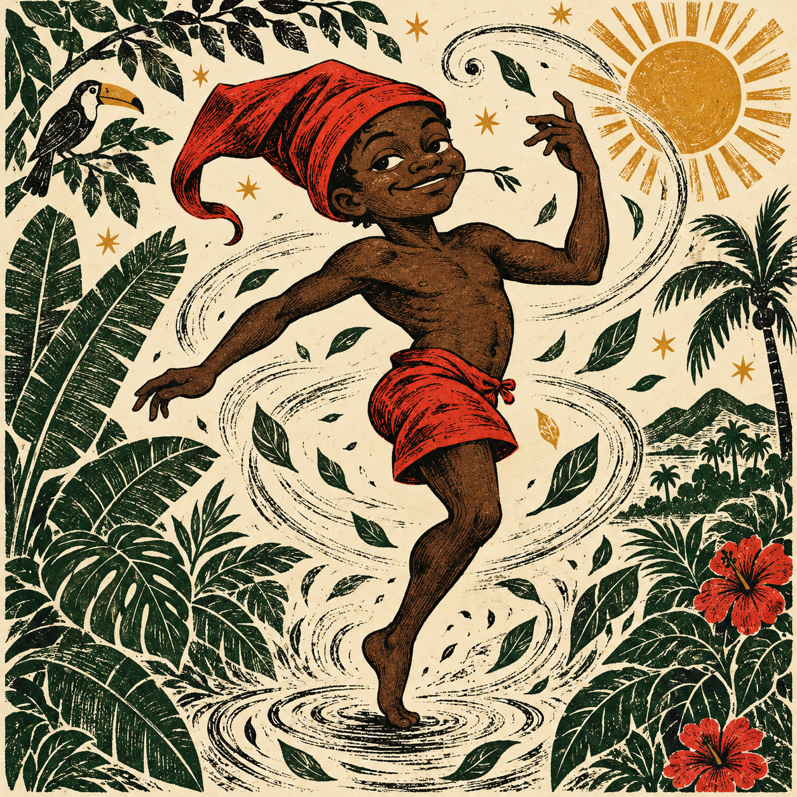

A ideia chega ao Congresso
O deputado Aldo Rebelo apresenta o Projeto de Lei 2.762/2003, propondo 31 de outubro como Dia do Saci. É um marco da mobilização pela data.
Consulte o projeto na Câmara ↗Uma perna só. Mil histórias para contar.
Um dia para celebrar o imaginário brasileiro e dar espaço às nossas próprias tradições.

O Dia do Saci ganhou força como uma resposta à presença crescente do Halloween: um convite para colocar o folclore brasileiro no centro da festa.
Mais do que uma data, é uma escolha de dar visibilidade à tradição oral, às histórias da infância e à diversidade cultural do Brasil.
O deputado Aldo Rebelo apresenta o Projeto de Lei 2.762/2003, propondo 31 de outubro como Dia do Saci. É um marco da mobilização pela data.
Consulte o projeto na Câmara ↗A Lei estadual 11.669, de 13 de janeiro, institui o Dia do Saci em 31 de outubro. A Lei 11.670 inclui no calendário turístico estadual a festa de São Luiz do Paraitinga.
Leia a lei estadual ↗Contar uma lenda, organizar uma roda de histórias ou compartilhar uma arte são maneiras de manter essa celebração viva.
Uma distinção importante: projeto federal e lei estadual são coisas diferentes. O projeto de 2003 não é apresentado aqui como uma lei nacional.
Não à imposição cultural. Sim ao espaço para as nossas histórias.
Quando o Halloween ocupa vitrines, escolas e redes, vale perguntar: onde estão o Saci, a Cuca, o Curupira e tantas histórias que atravessam gerações?
Celebrar o Dia do Saci é defender o protagonismo da cultura brasileira. A troca entre culturas pode enriquecer a vida; o apagamento das tradições locais, não. Nossa proposta é conhecer, criar e compartilhar o que também é nosso.
O folclore muda com quem conta. É memória, imaginação e criação coletiva — no interior, nas cidades e nas telas.
Em muitas versões populares, o Saci é um menino negro de uma perna só, com gorro vermelho, que aparece em redemoinhos e prega peças. As versões variam de região para região.
O folclore brasileiro reúne contribuições indígenas, africanas e europeias. Valorizar essa diversidade é reconhecer os povos e as pessoas que construíram nossas histórias.
Ouça uma história de alguém mais velho. Conheça um artista popular. Leia autores brasileiros. Faça uma roda de contação. E invente novas maneiras de celebrar.
Fontes para conhecer melhor a data e continuar a conversa.